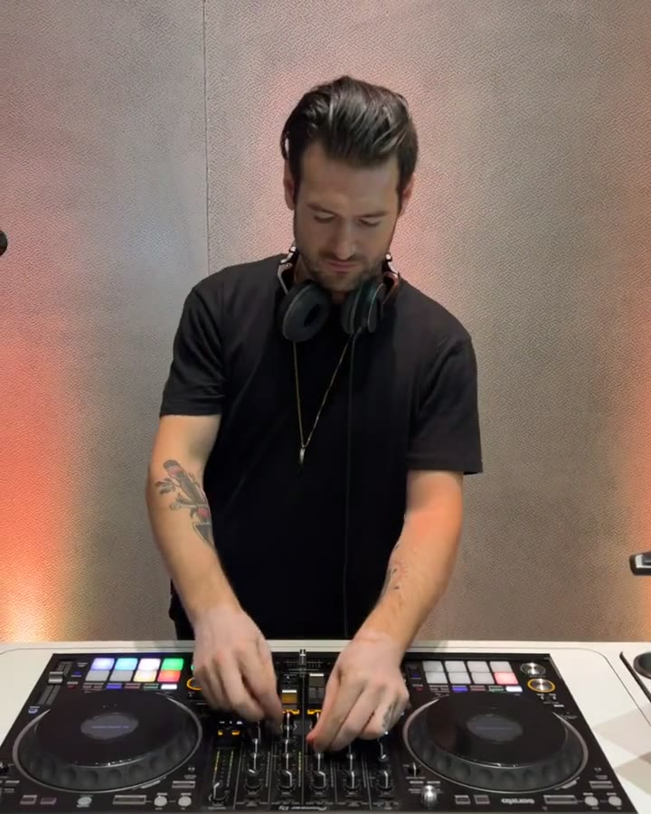
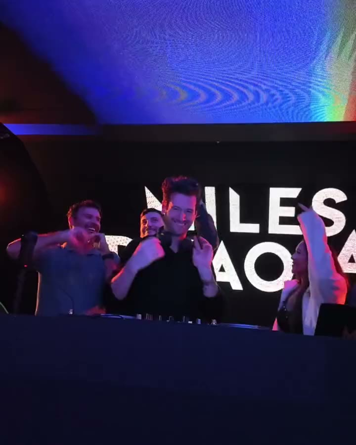
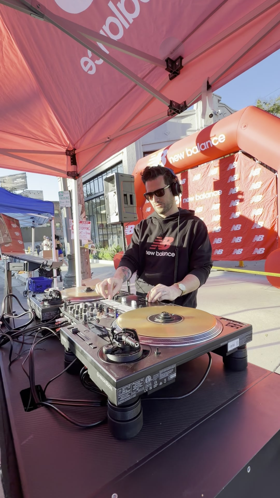
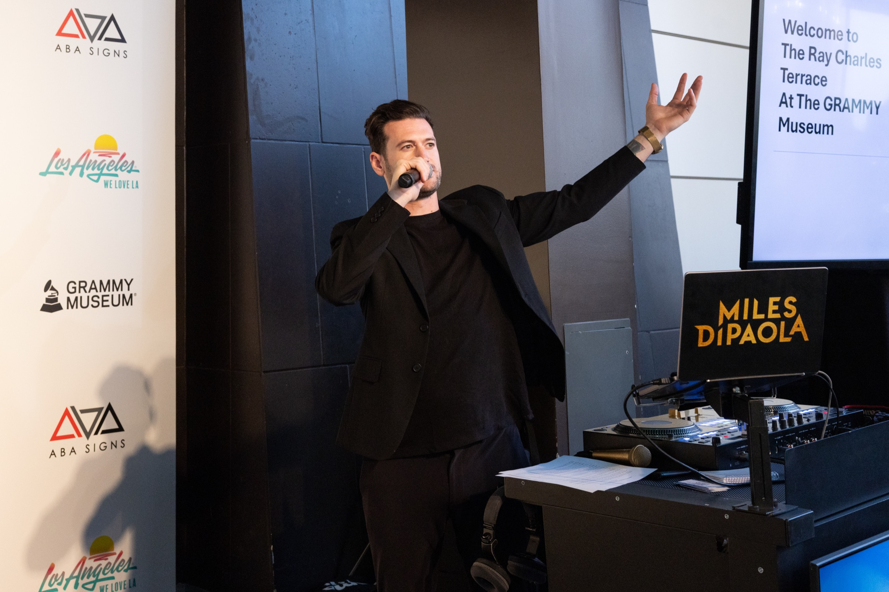
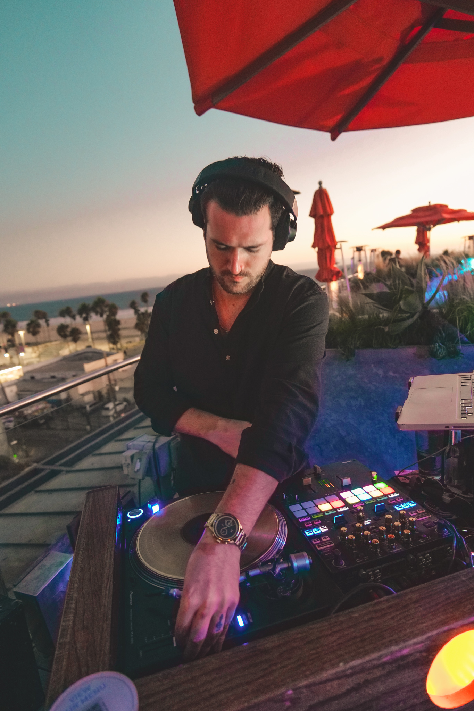

Miles DiPaola
DJ · Los Angeles → Aruba
Based in Los Angeles · available worldwide for destination events and productions.
Curated for the room Miles brings a considered, versatile approach to every set—balancing familiar favorites, deep cuts, and just the right amount of surprise. From intimate gatherings and brand activations to high-energy dance floors, his mixing style is shaped by the moment, keeping the energy seamless and the room moving.


Why Miles
Miles brings the experience to match the moment. With a natural ear for what works, sharp technical skills, and the confidence to take a room somewhere unexpected, he puts real talent and personality into every performance.
His experience spans intimate events, high-profile brand moments, and major stages. He has opened for Laidback Luke at Mixmag Lab LA, shared the SoFi Stadium stage with Coolio, The Sugarhill Gang, Tone Loc, and Young MC, holds the Delta One Lounge and Sky Club residency at LAX with Delta Air Lines, and is the events DJ for Sony Pictures.
Trusted by
- Sony Pictures
- Disney
- Delta
- Grammy Museum
- United Airlines
- W Hotel
- Trader Joe’s
- New Balance
- Fabletics
Recent rooms
The Grammy Museum · New Balance · Temple San Francisco · private events across Los Angeles and beyond
Signature events
Corporate · Brand Activations · Hospitality Experiences · Festivals · Luxury Weddings
Available worldwide
- DJ + MC bookings
- Open-format music: funk, disco, house, hip-hop, and beyond
- Professional Pioneer DJ setup or integration with venue production
- Vinyl add-on available upon request
- $3M certificate of insurance available



“THANK YOU for making our party such a success!! We heard nothing but rave reviews about the music and energy of the night. It’s the most packed the dance floor has been from start to finish!”— Arabella, Sony Pictures
Off the record
New York raised, LA sharpened. Son of a DJ, trained musician, fifteen years full-time behind the decks.
Most inspiring artist: Bill Withers.
Favorite artist: Radiohead.